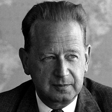

Dag Hammarskjöld

Dag Hammarskjöld, Tilldelad Nobels Fredspris postum 1961
Dag Hammarskjöld var en svensk som var generalsekreterare i FN från 1953 till sin död 1961. Hammarskjöld var en skicklig FN-chef som löste många problem. Det här var mitt under kalla kriget. I FN stod Väst (USA) mot Öst (Sovjetunionen), och Hammarskjöld måste balansera mellan dem. Vid en svår kris i den tidigare belgiska kolonin Kongo satte Hammarskjöld in FN-trupper.